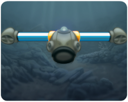

Attrapez diverses espèces de poissons provenant de la planète toute entière. Explorez 6 régions aussi fascinantes qu'exotiques en plein cœur des océans Atlantique, Indien et Pacifique. Chaque zone vous invite à découvrir 5 lieux de pêche, regorgeant tous d'un nombre incroyable de poissons. Mettez ensuite dans votre aquarium les poissons que vous avez attrapés et détendez-vous en les observant nager..
Objectif
L'objectif du jeu est d'attraper autant de poissons différents que possible pour les mettre dans votre aquarium. Les poissons se cachent aux quatre coins des océans Atlantique, Indien et Pacifique. Préparez-vous à explorer ces mers lointaines dans leurs moindres recoins pour attraper tous les poissons qui y ont élu domicile!
Comment jouer
Pour jouer, sélectionnez un niveau débloqué sur la carte du monde.
 Vous pouvez contrôler les mouvements du sous-marin de poche en tenant votre Wii Remote à la verticale et en l'orientant vers l'écran. Déplacez la Wii Remote vers la gauche et la droite pour que le sous-marin de poche se dirige dans la même direction. Attention : le sous-marin de poche ne peut pas se déplacer verticalement ou il effraiera les poissons.
Vous pouvez contrôler les mouvements du sous-marin de poche en tenant votre Wii Remote à la verticale et en l'orientant vers l'écran. Déplacez la Wii Remote vers la gauche et la droite pour que le sous-marin de poche se dirige dans la même direction. Attention : le sous-marin de poche ne peut pas se déplacer verticalement ou il effraiera les poissons.
 Pour attraper un poisson, vous devez le capturer dans une bulle que vous lancez depuis votre sous-marin de poche. Une fois que le poisson est dans la bulle, utilisez le rayon tracteur pour l'attirer vers vous. Lorsque le rayon tracteur est activé, vous pouvez contrôler les mouvements de la bulle en déplaçant votre sous-marin de poche : la bulle le suivra alors vers la gauche ou la droite, et ce, jusqu'à ce qu'il atteigne le sommet de l'écran.
Pour attraper un poisson, vous devez le capturer dans une bulle que vous lancez depuis votre sous-marin de poche. Une fois que le poisson est dans la bulle, utilisez le rayon tracteur pour l'attirer vers vous. Lorsque le rayon tracteur est activé, vous pouvez contrôler les mouvements de la bulle en déplaçant votre sous-marin de poche : la bulle le suivra alors vers la gauche ou la droite, et ce, jusqu'à ce qu'il atteigne le sommet de l'écran.
Commandes
bouton A |
Lancer une bulle/récupérer une bulle |
bouton B |
Afficher le score |
bouton + |
Afficher le menu Pause |
Minuterie
L'air est indispensable, non seulement pour activer les hélices de votre sous-marin, mais également pour générer des bulles. Vous pouvez donc continuer à arpenter les fonds marins, tant qu'il reste de l'air dans votre réservoir.
Si vous souhaitez consulter la quantité restante d'air, jetez un coup d'œil au réservoir d'air du sous-marin de poche. L'air diminue à mesure que le temps passe et lorsque vous lancez une bulle. Remarque : vous pouvez recouvrer un peu d'air en récupérant l'une de vos bulles, qu'elle soit vide ou pas.
Terminer un niveau
 Chaque poisson est représenté par une valeur en étoiles qui indique sa rareté et la difficulté pour l'attraper. Un objectif vous est présenté au début de chaque niveau. Pour terminer un niveau et débloquer le suivant, vous devez attraper suffisamment de poissons et remplir les étoiles de l'objectif.
Chaque poisson est représenté par une valeur en étoiles qui indique sa rareté et la difficulté pour l'attraper. Un objectif vous est présenté au début de chaque niveau. Pour terminer un niveau et débloquer le suivant, vous devez attraper suffisamment de poissons et remplir les étoiles de l'objectif.
Vous pouvez conserver les poissons capturés uniquement si vous parvenez à réaliser l'objectif du niveau.
Parfait
Si vous atteignez votre objectif avant la fin du temps limite, vous pourrez prétendre à un « Parfait »! Essayez d'attraper tous les poissons qui restent dans le niveau avant que le temps imparti ne se soit écoulé.